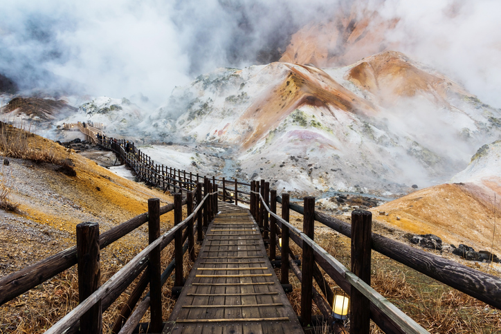

Información Cultural

En términos de naturaleza, Japón ofrece una gran diversidad geográfica, desde montañas cubiertas de nieve, como el monte Fuji, hasta playas tropicales en Okinawa.También es un país propenso a desastres naturales, como terremotos, tsunamis y tifones, debido a su ubicación en el Cinturón de Fuego del Pacífico. Sin embargo, los japoneses han desarrollado tecnologías y sistemas de prevención avanzados para mitigar estos riesgos.
Curiosidades
flores de cerezo y su impacto cultural Japón es famoso por los cerezos en flor (sakura), que florecen cada primavera. Aunque estas flores duran solo unos días, son un símbolo nacional de belleza efímera y renovación. Durante la floración, los japoneses celebran el Hanami, una tradición que consiste en contemplar las flores mientras se realizan picnics bajo los árboles. Este fenómeno no solo es culturalmente significativo, sino que también atrae a miles de turistas de todo el mundo. Además, la floración avanza de sur a norte, desde Okinawa en enero hasta Hokkaido en mayo, creando un "frente de floración" que los medios locales reportan como si fuera el clima.